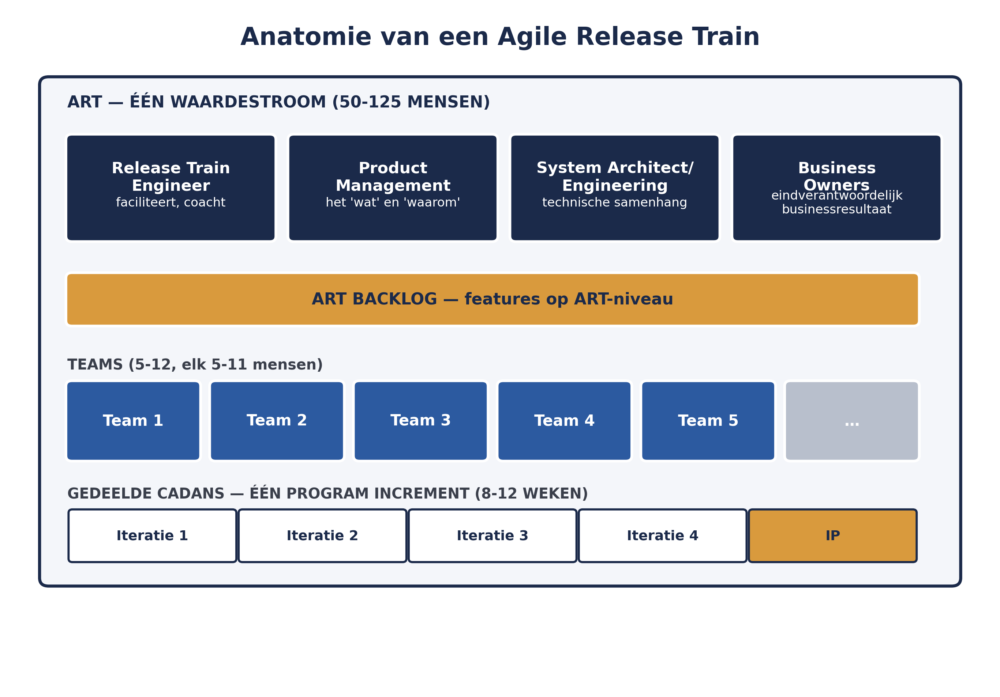
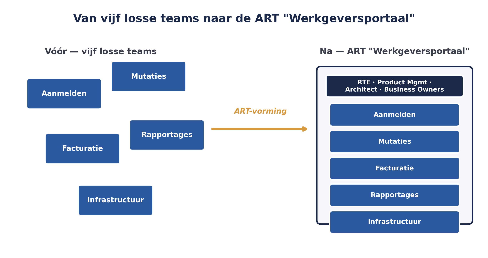

De vorige drie delen behandelden waarom schalen misgaat, welke mindset eronder ligt, en welk leiderschap dat mogelijk maakt. Dit deel introduceert de structuur zelf: het Agile Release Train. Voor Meridiaan is dit het moment waarop de vijf losse Scrum-teams rond het werkgeversportaal formeel worden samengebracht tot één trein.
6secties
±2udagdeel + huiswerk
10controlevragen
4ART-niveau rollen
Positionering. Deze cursus is een voorbereiding op de certificeringen SAFe Agilist (SA) en SAFe Practitioner (SP) van Scaled Agile, en uitdrukkelijk geen vervanging van het officiële SAFe-curriculum — dat wordt uitsluitend aangeboden via geautoriseerde Scaled Agile Partners. Voor terminologie en structuur volgen wij SAFe 6.0, de actuele versie van het Core-raamwerk.
Niveau 1: ➊ Waarom schalen misgaat → ➋ Lean-Agile mindset → ➌ Lean-Agile leiderschap → ➍ Agile teams en de ART (hier) → ➎ Waardestromen en ART-ontwerp → ➏ ART Backlog & WSJF → ➐ PI Planning voorbereiden → ➑ PI Planning uitvoeren → ➒ AI-Native I → ➓ Examentraining + capstone
01
Wat een Agile Release Train is
⏱ 15 min
Een ART is een team van teams — doorgaans vijftig tot honderdvijfentwintig mensen — dat gezamenlijk verantwoordelijk is voor het definiëren, bouwen en testen van waarde binnen één waardestroom. Dit is het organisatieprincipe waarmee SAFe principe 10 uit deel 2 — "organiseer rond waarde" — concreet maakt.
Een ART is geen project met een einddatum: het is een langlopende, stabiele structuur, terwijl de mensen erin aan wisselend werk kunnen werken. Dat onderscheid is belangrijk: bij WGP 2.0 was het precies andersom — een tijdelijk project met een vaste scope, waar mensen na afloop weer uiteenvielen zonder dat de kennis en samenwerking behouden bleven.
Een ART werkt volgens een vaste cadans: een Program Increment (PI), doorgaans acht tot twaalf weken, opgebouwd uit meerdere iteraties (sprints) plus een Innovation & Planning-iteratie aan het eind. Deze cadans is de directe toepassing van principe 7 uit deel 2 (cadans en synchronisatie): in plaats van dat elk team zijn eigen ritme kiest, plant en levert de hele trein volgens hetzelfde ritme.
Controlevraag
Uit Werkboek deel 4, Opdracht 4.1 — project versus trein
1Leg uit waarom WGP 2.0 als project was ingericht, en waarom dat een probleem was dat een ART wél oplost. Noem twee concrete verschillen tussen "een project met een einddatum" en "een langlopende ART".Toon antwoord
WGP 2.0 had een vaste einddatum en scope, waarna het team uiteenviel — kennis en samenwerking gingen verloren. Een ART is een stabiele, langlopende structuur waarbinnen het werk verandert maar de teams en de samenwerking blijven bestaan. Twee concrete verschillen: (1) een project eindigt, een ART blijft bestaan zolang de waardestroom bestaat; (2) een project plant eenmalig vooraf, een ART plant herhaaldelijk elke PI opnieuw op basis van actuele inzichten.
02
De rollen op ART-niveau
⏱ 20 min
Naast de teams zelf kent een ART een aantal rollen die niet in een individueel Scrum-team bestaan, omdat ze precies het coördinatieprobleem oplossen dat in deel 1 werd geïdentificeerd:
Release Train Engineer (RTE) — de servant leader en chief coach van de ART. De RTE faciliteert de ART-events (waaronder PI Planning, die u in deel 7-8 in detail leert), signaleert en helpt afhankelijkheden en risico's tussen teams oplossen, en bewaakt de cadans. De RTE heeft geen hiërarchische macht over de teams — het gezag komt uit faciliteren en coachen, in lijn met de Lean-Agile Leadership-dimensies uit deel 3.
Product Management — verantwoordelijk voor het "wat" en "waarom" op ART-niveau: de ART Backlog, features prioriteren, en de verbinding met klanten en markt. Product Management verhoudt zich tot de Product Owners in de teams zoals een programmaniveau zich verhoudt tot een projectniveau: richting geven, niet elke keuze overnemen.
System Architect/Engineering — bewaakt de technische samenhang over teams heen: de architecturale runway en de technische kwaliteit van wat de trein gezamenlijk oplevert.
Business Owners — een kleine groep sleutelbelanghebbenden (doorgaans twee tot drie) met eindverantwoordelijkheid voor de business-resultaten van de ART. Zij nemen actief deel aan PI Planning en geven bij de PI-afsluiting hun oordeel over de geleverde waarde.

Figuur 4-1 — anatomie van een ART: teams, ART-niveau rollen en de gezamenlijke cadans schematisch weergegeven
Controlevragen
Uit Werkboek deel 4, Opdracht 4.2 — rollen toewijzen
1Beslissen welke features de komende PI de hoogste prioriteit krijgen, gebaseerd op klant- en marktinzicht — welke ART-niveau rol is hiervoor primair verantwoordelijk?Toon antwoord
Product Management.
2Signaleren dat team Mutaties en team Facturatie een afhankelijkheid hebben die de PI Planning nog niet had voorzien — welke rol?Toon antwoord
Release Train Engineer.
3Beoordelen aan het eind van de PI of de geleverde waarde daadwerkelijk bijdraagt aan de Wtp-deadline — welke rol?Toon antwoord
Business Owners.
4Bewaken dat de technische keuzes van de vijf teams straks nog samen één werkend portaal vormen — welke rol?Toon antwoord
System Architect/Engineering.
03
De teams binnen de ART
⏱ 14 min
Een ART bestaat uit meerdere Agile-teams — meestal vijf tot twaalf, elk vijf tot elf mensen. Deze teams kunnen op verschillende manieren zijn georganiseerd: als een klassiek Scrum-team met Scrum Master en Product Owner, als een Kanban-team, of als een SAFe Team dat beide combineert.
Raakvlak met de scrum-cursus
De rollen van Scrum Master en Product Owner op teamniveau — hun taken, vaardigheden en de weg naar certificering — behandelt deze cursus niet in detail; die vindt u uitgewerkt in de scrum-cursus. Voor deze cursus is relevant hoe die rollen zich verhouden tot het ART-niveau: een Scrum Master coördineert steeds vaker óók buiten het eigen team, in samenspraak met de RTE, en een Product Owner werkt zijn deel van de ART Backlog uit in samenspraak met Product Management.
Wat in deze cursus wél nieuw is: teams binnen een ART zijn niet toevallig samen — ze zijn opgebouwd rond eenzelfde waardestroom, met zo min mogelijk onderlinge afhankelijkheden per team en zoveel mogelijk autonomie om zelfstandig waarde te leveren. Dat ontwerp — welke teams u vormt, en waarom juist zo — komt in deel 5 aan bod bij de bespreking van waardestromen.
Controlevragen
Uit Werkboek deel 4, Opdracht 4.3 — het raakvlak met de scrum-cursus
1Wat verandert er voor een Scrum Master als zijn of haar team onderdeel wordt van een ART, vergeleken met een Scrum Master van een volledig zelfstandig team?Toon antwoord
De Scrum Master krijgt een taak die verder reikt dan het eigen team: coördineren met andere Scrum Masters en de RTE over afhankelijkheden en gezamenlijke cadans, in plaats van uitsluitend het eigen team te faciliteren.
2Wat verandert er voor een Product Owner in diezelfde overgang?Toon antwoord
De Product Owner werkt niet meer volledig autonoom aan de eigen backlog, maar stemt af met Product Management over hoe ART-brede features worden opgesplitst in teamwerk.
04
Hoe een trein samenhangt
⏱ 14 min
Wat een verzameling teams tot één trein maakt, is niet de aanwezigheid van een RTE alleen, maar een aantal gedeelde mechanismen:
Gedeelde cadans — alle teams werken in dezelfde PI, met (meestal) dezelfde iteratielengte.
Gezamenlijke planning — PI Planning brengt alle teams fysiek of virtueel samen om gezamenlijk te plannen, in plaats van dat elk team apart plant en de resultaten achteraf worden samengevoegd.
Gedeelde events — naast PI Planning kent een ART ook een System Demo (de geïntegreerde toename van waarde over alle teams heen tonen, niet per team apart) en Inspect & Adapt (gezamenlijk reflecteren en verbeteren op ART-niveau).
Eén ART Backlog — met features die groter zijn dan één team kan opleveren, en die pas tijdens PI Planning worden opgesplitst in stories per team.
Controlevraag
Uit Werkboek deel 4, Opdracht 4.4 — gedeelde mechanismen herkennen
1Noem de vier mechanismen die een verzameling teams tot één trein maken. Wat zou er bij Meridiaan ontbreken als het niet aanwezig was — bijvoorbeeld: wat zou er misgaan zonder gedeelde cadans?Toon antwoord
Gedeelde cadans — zonder deze zouden teams op verschillende momenten plannen en opleveren, waardoor synchronisatie via toeval zou moeten ontstaan. Gezamenlijke planning — zonder PI Planning zou elk team apart plannen, met afhankelijkheden die pas achteraf aan het licht komen (exact het WGP 2.0-probleem). Gedeelde events — zonder gezamenlijke System Demo zou niemand het geïntegreerde resultaat zien, alleen de losse teamresultaten. Eén ART Backlog — zonder deze zou niemand op ART-niveau kunnen prioriteren tussen features die meerdere teams raken.
05
Terug naar Meridiaan
⏱ 13 min
De vijf teams rond het werkgeversportaal — Aanmelden, Mutaties, Facturatie, Rapportages en Infrastructuur — vormen samen de eerste ART van Meridiaan. Voor de opstart moet Meridiaan concreet invullen: wie wordt RTE (een kandidaat is de huidige programmamanager van het vervolg op WGP 2.0, mits die de omslag van sturen naar faciliteren kan maken — zie de leiderschapsdimensies uit deel 3), wie vormt Product Management (waarschijnlijk de huidige Product Owners samen, aangevuld met een verantwoordelijke voor het geheel), en wie treedt op als Business Owners (naar verwachting het hoofd Klantcontact en het hoofd Operations, die de WGP 2.0 post-mortem hebben opgesteld).

Figuur 4-2 — van vijf losse teams naar de ART "Werkgeversportaal" bij Meridiaan
Risico bij de RTE-keuze
De voor de hand liggende RTE-kandidaat — de programmamanager van WGP 2.0's vervolg — belichaamt precies het risico dat deze rol vraagt om te faciliteren in plaats van te sturen. Een RTE die gewend is te sturen als projectleider, ondermijnt de autonomie van de teams die de ART juist moet opleveren.
06
Kernbegrippen uit dit deel
⏱ 8 min
Begrip
Omschrijving
Agile Release Train (ART)
Een langlopend team van teams, vijftig tot honderdvijfentwintig mensen, verantwoordelijk voor één waardestroom
Program Increment (PI)
De vaste cadans van acht tot twaalf weken waarin een ART werkt en plant
Release Train Engineer (RTE)
De servant leader en chief coach van de ART
Product Management, System Architect/Engineering, Business Owners
De overige ART-niveau rollen
ART Backlog
De gezamenlijke backlog van features op ART-niveau, boven de teambacklogs
Controlevragen
Uit Werkboek deel 4, Zelftoets vraag 1 en 3
1Wat is het belangrijkste verschil tussen een ART en een project?Toon antwoord
Een ART is een langlopende, stabiele structuur; een project heeft een vaste scope en einddatum.
2Wat doet een RTE, en wat doet een RTE nadrukkelijk niet?Toon antwoord
De RTE faciliteert ART-events, helpt afhankelijkheden en risico's tussen teams oplossen en bewaakt de cadans; de RTE heeft geen hiërarchische macht over de teams.
Verder naar deel 5
Deel 5 beantwoordt de vraag die dit deel openliet: hoe bepaalt u wélke teams samen een ART vormen? Via waardestromen, niet via de bestaande organisatiestructuur.